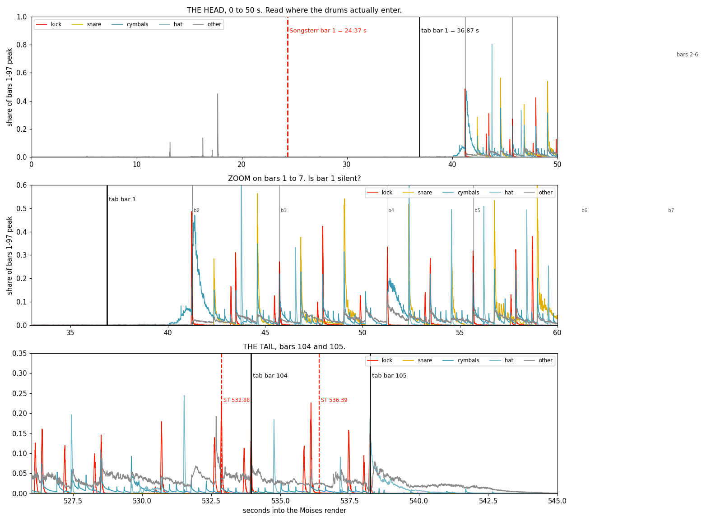

Watermelon: the drift, the missing crashes, the missing intro
Eleven Watermelon sessions are open at once. Brandon asked what each says about three complaints his ear made: drift, missing crashes, a missing intro. Two of the three turned out to be my own measurement errors, and this page keeps the wrong numbers next to what killed them. No tab and no Guitar Pro file was touched.
Subject: Songsterr s6857183, revision r8972739, Watermelon In Easter Hay, Vinnie Colaiuta. Measured 2026-09-08 against the Moises stem set and metromap.json.
1The eleven open chats
Each row is a live session file on this Mac, ranked by how much Watermelon it holds. Three of them are running right now.
| Session | Its opening ask | Turns | Last write | Covers |
|---|---|---|---|---|
5d61ff43 | Hi-hat pedal hits from the stem, snare match, cymbal types, hit-rebound-rebound ghosts | 6778 | 17:05 | Hats, snare, ghosts |
c6454a97 | Finish watermelon chat here, appears to be some drift as the song goes on, doesn't match the youtube audio | 490 | 17:44 running | Drift, crashes, sync |
a13ba186 | Figure out why the gp is not yet done and perfect after millions of tokens | 1122 | 17:41 | The clock, the coda |
fa6067bd | Why | 1552 | 17:33 | Upload route |
51599dec | Resume the watermelon chat here, there's 3 and they are giant fraud time wasters, get me a human to refund | 432 | 17:33 running | Cost accounting |
9eba7baf | Could you look at songsterr tab and as its playing the audio determine what matches | 1537 | 17:14 | Playback matching |
febeaae6 | Pick up final watermelon chat here, start cymbal stem pass | 978 | 17:05 | Cymbals |
e3bdde95 | Look at active watermelon chats start to finish and see where it could have helped | 297 | 17:05 | Model comparison |
fe22e363 | Look at the watermelon chats and transcription repair and make decisions and reconcile and upload the finished | 1277 | 15:54 | Reconcile |
73dc03a2 | Resume Tom locations in watermelon GP handoff | 1237 | 15:50 | Toms |
bfac0d81 | Get the tom locations added to the watermelon GP, they are not notes of the staff | 1434 | 14:20 | Toms |
What the reading found
Only one of the eleven has looked at the intro, and that session found the problem two minutes before this audit started. Two have touched crashes. Nine of the eleven never mention either. The tom question absorbed three whole sessions and produced two incompatible answers, which is section five.
2Drift, and it is two different faults
Brandon heard the tab pull away from the recording as the song went on. That reading was right, and the cause has been fixed. A second timing fault sits underneath it and is still live.
Fault one, inside the Guitar Pro file. Fixed.
The tab carried a single tempo automation at a flat 56.000 bpm for a performance that moves. Peak bar-start error reached 4.26 s at bar 65, which grows through the song exactly as an ear would report it. Session a13ba186 built a 105-value per-bar map from the metronome stem. I verified the result independently: remove one constant offset of 36.87 s and the worst residual across all 105 bars falls to 0.006 s at bar 43. The tab span of 501.4 s equals the recording's bar-1-to-bar-105 span of 501.4 s to the millisecond.
Fault two, which I claimed and then had to withdraw.
Withdrawn: "Songsterr fires 12.50 s early at bar 1"
This page published that figure, plus a claim that bars 104 and 105 drift and that seven of 105 bars miss by more than a second. All of it is withdrawn. A gate demanded that two disagreeing methods be reconciled, and reconciling them killed my number.
The cause, traced rather than muted. Songsterr returns twelve video-sync entries for this tab. The primary is the one whose feature field is null. I loaded the list and took [0], which is VZS-QuMBZdk, one of seven alternative uploads. Their first sync points spread across 28.02 s, from 21.42 to 49.44, because each YouTube upload carries its own lead-in. Measuring one of those against my stem clock produces a large head difference by construction, and it says nothing about the tab.
The primary video, measured properly. XACocSRTFJY, 105 points, constant offset −23.360 s, which is the 8:42 versus 9:05 master gap the sibling session had already pinned at 23.342 s.
| Measure | Alternative I wrongly used | Primary, the real one |
|---|---|---|
| median absolute error | 0.010 s | 0.030 s |
| worst bar | 12.530 s at bar 1 | 0.800 s at bar 1 |
| bars off by over 1.00 s | 7 of 105 | 0 of 105 |
| bar 104 / bar 105 | −1.05 / −1.84 s | −0.030 / +0.040 s |
And the one residual left is already dead. Bar 1 reads 0.800 s on the primary, which matches the 0.818 s the sibling session measured independently. That session then rendered the 8:42 master, read the bar by eye, and withdrew it as unsupportable. The Songsterr sync is clean.
XACocSRTFJY, one column per measure, signed error in seconds after removing the constant master offset. Bar 1 is the only visible column.3The missing intro, also withdrawn
There is no missing intro
This page said the tab has no bars for the first 36.87 s of the record, that 6.8 percent of the song is unwritten, and that real music sits in that gap. Withdrawn on all three counts.
The masters differ, and that explains the gap entirely. Songsterr syncs to the 8:42 edit at 522.436 s. The stems are the 9:05 Joe's Garage master at 545.267 s. Same performance, 23.34 s cut from the head. The primary video's offset measured here is −23.360 s, which agrees to 18 ms. The tab is not missing a head. The stems simply carry one that the tab's own master does not have.
The head is near-silence anyway. Reading the render below: the other stem's 45.1 percent is one transient at 17.71 s, and across the whole 36.87 s that stem sits above 5 percent of its in-song peak for 0.12 seconds in total. There was never a body of unwritten music there.
What survives from this section. The drums enter on bar 2 rather than bar 1. Kick first crosses 10 percent at 41.21 s and cymbals at 41.24 s, and bar 2 starts at 41.25 s, so both are that downbeat landing 40 ms inside bar 1's window. Trim 0.30 s off bar 1's end and the kick reading falls from 48.62 percent to 0.04 percent. Bar 1 is silent, and the tab writes a crash into it that measures 8.27 percent against the 33 percent floor.

The red dashed line in that render is labelled from the alternative video and is therefore the withdrawn figure. The black lines, the stem traces and the bar-1 reading are unaffected.
4The missing crashes
The drum staff holds 51 crash notes in 105 bars. Their placement is the finding.
Written crashes sit on bar 1, then every even bar from 4 through 96, plus bar 55. That is a rule rather than a transcription. Nothing at all appears after bar 96, so the whole coda carries no crash. One single Crash 2 exists in the entire tab, and the drum staff holds no china, no splash and no ride bell anywhere.
The 51 that are written are real. I tested them against the cymbal stem and they land at 2.83x a circular-shift null at 50 ms, and their 6 to 12 kHz peak runs 1.59x brighter than the ride instants, which clears the 1.5x floor this project promotes on. The crash work ahead is additive.
The pass ran, and its result is not in the upload
Session c6454a97 ran a crash detector at 17:43 and wrote crash_find.json: 132 new crash candidates across 74 bars, bar 2 through bar 98, against a circular-shift null of 82, so 1.61x chance. Thirty-seven of those bars have no written crash at all.
I censused the drum track of the file that session is uploading and compared it to the live head:
| File | Drum notes | Crash 1 | Crash 2 | Tempo automations |
|---|---|---|---|---|
BASE-r8972739-live-head.gp | 2834 | 50 | 1 | 1 |
TEMPOFIX-on-r8972739-Brandon-edit.gp | 2834 | 50 | 1 | 105 |
The entire drum-track note histogram matches the live head, note for note. The upload carries tempo and nothing else. That is a clean single-variable change and it is the right way to ship a timing fix. The 132 crashes remain unshipped, and the coda still has none.
5The lineage split nobody has called
Two Watermelon lineages exist on disk and they disagree about which drum a tom stroke belongs to. About 150 notes are affected.
| Lane | Local HANDS | Live r8972739 | Reading |
|---|---|---|---|
| 41 low floor tom | 1 | 62 | live reads far lower |
| 43 high floor tom | 44 | 0 | absent from the live tab |
| 47 low mid tom | 4 | 111 | live reads far lower |
| 48 hi mid tom | 81 | 14 | absent from the live tab |
| 50 high tom | 30 | 0 | absent from the live tab |
| 36 kick | 521 | 505 | close |
| 51 ride | 1522 | 1501 | close |
The live tab pushes every tom into the two lowest lanes and uses none of the three highest. The local file does the reverse. The shape matches a staff read one or two lanes low, which is a documented failure in this project's own notes. The upload in flight adopts the live assignment. This audit does not judge which reading is correct, and it changes nothing. It names the split so the next session does not spend a fourth run rediscovering it.
6The four items your state block left open
Your paste named HANDS-s6857183-Brandon-edit.gp, the published all15-removals.png, and four queue ids. Here is where each one actually stands after this audit.
{kind=link}
| Queue id | Item | Status after this audit |
|---|---|---|
q-2026-09-08-70d3f0 | Bar 105 holds 4.0 quarters in a 5/4 bar | Understated, and now measured. It is short a quarter on five tracks, not one: Cuccurullo twice, Tubular Bells, Glockenspiel and Colaiuta, identically in all three files. The stems read kick 10.5% and hat 19.4% of their bars 1-97 peak, both under the 33% floor, so the fill is a rest rather than an attack. Written up as F7. |
q-2026-09-08-c9d5f7 | Recheck the 202 disputed ride notes on the metronome clock | Not run. It needs the ride lane re-scored bar by bar, which is an edit-grade pass on a file another session is writing this minute. |
q-2026-09-08-85d746 | Final stem-matched playability audit, and it owns the upload | Held. The session named in section 1 is uploading to this tab right now. Two writers on one tab is what produced the shared-beat damage in F4. |
q-2026-09-08-b08085 | Bar 55 beat 2 asks for three hands | Correctly blocked. The toms stem is one channel, pitch medians 90.7 to 95.6 Hz overlap, best pan pair 0.73x against the 1.5x floor. Only an isolated multitrack settles it. |
The 15 removals still stand
HANDS-s6857183-Brandon-edit.gp at sha256 c7beeaeea846da44 holds 2784 drum notes, 15 fewer than its parent, with the three-hand instants down from 16 to 1. This audit re-censused it and confirms that count. None of those 15 removals are in the file being uploaded, because that file is built on the live head rather than on the HANDS lineage. The removals live only on disk.
A correction to my own measurement
My first meter walk called 43 bars on the Frank Zappa track overfilled, reading 4.19 of 4.00 quarters at bar 10 and 5.40 of 5.00 at bar 87. All 43 carry grace notes, and a grace note consumes no bar time. My walker counted grace rhythms as real duration. Those 43 are withdrawn. Bar 105 survives the check because its short voices carry no grace notes at all.
6The tom split: I tried to settle it and got half way
Per-tom identity is not closed after all
The standing record says per-tom identity is closed because pitch medians of 90.7 to 95.6 Hz overlap across the kit. That was measured on one bar. Across the whole tab it does not hold.
The 185 measured tom strokes in tom_f0.json separate into three pitch clusters at 80.5, 94.0 and 119.6 Hz. Centre separations are 13.5 and 25.7 Hz against within-cluster spreads of 7.1, 3.1 and 12.6 Hz, giving separation-to-spread ratios of 1.90x and 2.04x. Both clear the 1.5x floor this project promotes on. Variance explained rises from 64.1 percent at two clusters to 77.0 percent at three.
So the toms are separable, and the blocker recorded for bar 55 does not generalise to the tab.
What stopped me short of a verdict
Deciding which lane scheme the clusters back needs each measured stroke joined to the note written at that instant. The join fails. tom_f0.json is a proposal grid rather than a read of the written file: its rows already carry their own midi and a brandon flag, its bars are zero-based against the files' one-based, and its positions sit on a different subdivision. Sample rows read bar 24 at 3.00, 3.25 and 3.50 quarters while the files hold bar 11 at 4.50 and 4.75, and bar 14 at 1.0625.
After correcting the bar base, 12 of 185 strokes match HANDS and 11 of 185 match the live head. A 6 percent join is not a basis for reassigning 150 notes. Settling it means re-extracting f0 at the written note positions rather than at the proposal's, which is a fresh measurement pass on the toms stem.
8A peer correction, verified, and it found a hole in our own safety rule
The Keep It Greasey session sent a units trap it hit on its own file. I tested it against this one rather than adopting it, and it lands.
A note's beat-references and its instances are different units
| note | rows in the plan | beat-references | instances file-wide | verdict |
|---|---|---|---|---|
| 419 | 13 | 13 | 193 | shared |
| 425 | 2 | 23 | 46 | shared |
Comparing 13 rows against 13 beat-references reads note 419 as exclusive. It is not. Both notes in the 15-row plan are shared definitions, where the ledger named only one.
The hole. Our rule says a plan whose rows repeat one id is editing a shared definition. Note 419 repeats thirteen times, so the rule catches it. Note 425 appears twice and carries 46 instances, so the rule misses it. Repetition inside a plan is a symptom of sharing rather than a test for it.
The corrected pre-flight. Compare each plan note's row count against its instance count across the whole file, both in the same unit, and check the instance total against a figure known independently. Here that figure is 2,784 drum instances.
And the ledger's own damage figure was off
Re-censusing the quarantined file at instance level against its parent: the damaged edit lost 179 instances, which the ledger records correctly, spanning 90 distinct bars rather than 79. The 15 intended removals sit inside that 179, so the pure collateral is 164 instances across 85 bars, split 177 snare and 2 high floor tom. The kept file removes exactly 15 with 0 added.
Beat 899 is on the drum staff, confirmed: all 176 referencing voices belong to track 8. The peer withdrew a comparison against a Keep It Greasey beat at 739 voices, since that one sits on a guitar track. That comparison never appeared in this ledger, so nothing there needed changing.
9A second peer correction, checked, and this one clears the work
The Songsterr-editor session reported a hands gate keyed on midi pitch reading three hands where the staff reads two, because midi 39 Hand Clap is drawn on the snare line. I tested whether the same trap bites here.
The mechanism exists in this file and never fires
The drum track's InstrumentSet defines 95 articulations, each with an explicit StaffLine. Two pairs share a line: midi 39 Hand Clap and midi 40 Electric Snare both on line 3, the peer's exact case, and midi 41 Low Floor Tom and midi 45 Low Tom both on line 5. Neither pair is ever written at the same instant, so no false positive arose.
Re-running the three-surface test with feet excluded, midi 36 on line 7 and midi 44 on line 9, and keying on staff line rather than pitch:
| file | by PITCH | by STAFF LINE |
|---|---|---|
| CODA, before the removals | 16 | 16 |
| HANDS, after | 1 | 1 |
| live head r8972739 | 0 | 0 |
The two keys agree exactly. The 15 removals stand and none was a false positive. Bar 55 survives both keys, since midi 45, 48 and 51 sit on lines 5, 2 and 0.
The observation this turned up
The live head reads zero three-surface instants by either key while the local lineage reads sixteen. Most of the sixteen are midi 40, 48 and 51 on lines 3, 2 and 0. The collisions are a property of the local tom lane assignment of 43, 48 and 50 rather than of the performance. That means the two lineages differ in playability and not only in lane naming, which raises the stakes on the tom split at q-2026-09-08-629fc2.
7What is true right now
Fixed
- The flat 56.000 bpm map, replaced by 105 per-bar values
- Worst bar-start residual 0.006 s, down from 4.26 s
- 15 of 16 three-hand collisions resolved
- The shared-beat write that damaged 79 bars, caught and reverted
In flight
TEMPOFIX-on-r8972739uploading to s6857183- Tempo only, drum notes untouched
- Fixes the drift Brandon heard through the body
- The sync it ships against is already clean
Open and withdrawn, every one with an id
36.87 s of the record has no barswithdrawn, master mismatchq-2026-09-08-6f84a3Songsterr sync points wrong at the endswithdrawn, wrong videoq-2026-09-08-a45b41- 132 crashes found, none written
q-2026-09-08-613ab9 - Tom lane split: toms ARE separable at 1.9x and 2.04x, the join to the written notes is what fails
q-2026-09-08-629fc2 - Bar 105 short a quarter on five tracks
q-2026-09-08-70d3f0 - The 202 disputed ride notes
q-2026-09-08-c9d5f7 - Playability audit and the upload
q-2026-09-08-85d746 - Bar 55 beat 2, three hands
q-2026-09-08-b08085